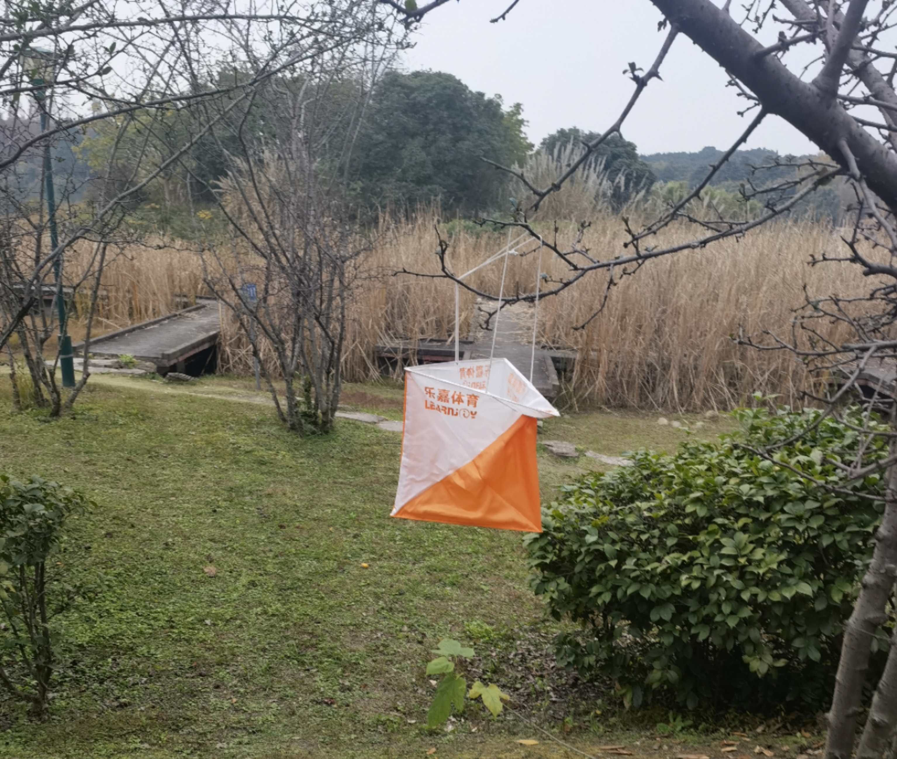
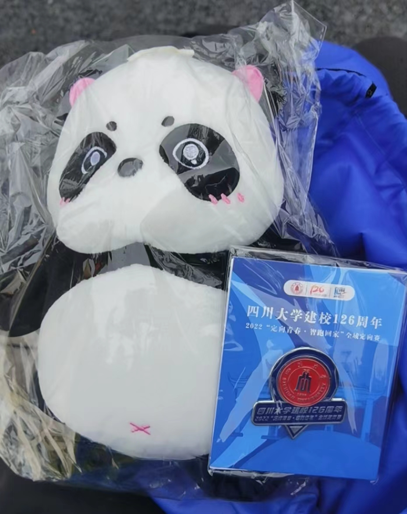

Charming Orienteering
Today, I would like to talk about my connections with orienteering, which has now become one of my favorite sports.
Orienteering is a sport where participants, using a map and a compass, navigate their way to a series of control points in a certain order. It is typically held in forests, parks, or university campuses. Orienteering originated in Sweden in the 19th century as a military sport and has now evolved into an outdoor competitive sport and recreational activity suitable for people of all ages.
My first encounter with orienteering was when I was in primary school. One day, my parents suddenly told me about an orienteering activity that was open to the public, taking place in the designated area within a scenic area. I went there, not really knowing what to expect, and joined a team with a few kids and adults. We made our way from one checkpoint to another at leisure, enjoying the view and ticking off each point.
This non-competitive play which is just for fun and experience planted a seed in my heart.
Many years passed in the blink of an eye, and I crossed paths with orienteering again in college. To my surprise, I discovered that among a variety of sports courses, there was one called “campus orienteering.” The following year I was dedicated to physical education classes, and as a result, I got familiar with almost every corner of the campus in a short time because our classes were not held in fixed locations. It could be a lawn with many trees, could be on a hilltop of Bugao Hill, could be on an island in Mingyuan Lake, or could even cover the majority area of the campus.

This semester, we have a elective course open to all undergraduate students about orienteering of 2 credits, which takes place in several tourist attractions in Sichuan. I really want to take this course, but what disappointed me a lot is that my schedule conflicts with the course. I hope to have the opportunity to experience this course next year. What is noteworthy is that the teacher who teaches this course also teaches many other cool courses, such as tree climbing, wilderness survival skills, and paragliding.
In addition to classes, Sichuan University also organizes a multitude of orienteering activities, some of which are held annually. I once participated in the “100-meter orienteering” final at the Autumn Sports Games, but unfortunately, I missed a control point and my grade was rendered invalid. What’s more, I participated in another large-scale orienteering competition held at the Wangjiang Campus. Although I didn’t win any prizes, I received a panda stuffed toy and a badge as souvenirs.

Besides, we also has the Sichuan University Orienteering Alliance, and there is an orienteering team that requires selection to join. They also organize interesting activities and bring together many orienteers. This is wonderful!